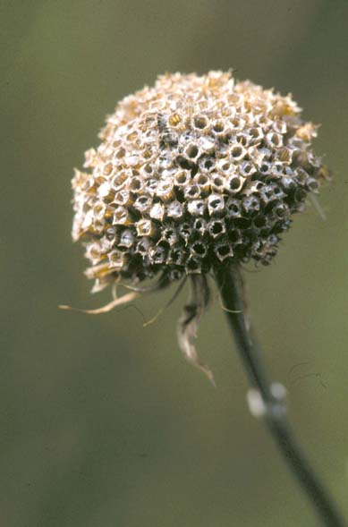
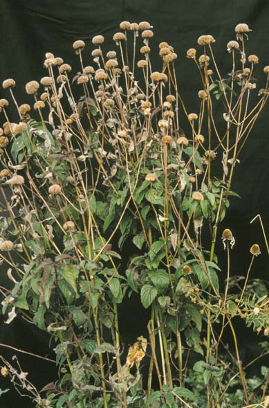
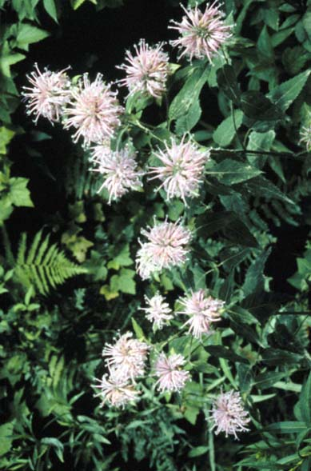
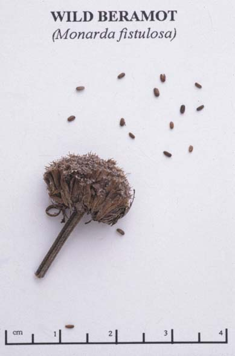

Monarda Fistulosa
Family: Lamiaceae
Wild Bergamot
Swink/Wilhelm #4



Click to view larger photo
FLOWERING: July - August
SEED TIMING: September to end of October
HABITAT: Upland woods, openings and wet/dry prairies. Very tolerant.
DIAGNOSTIC FEATURES: 2 - 3 feet. Erect perennial with paired, serrated, lance-shaped leaves and regal terminal heads of tubular, feathery lavender blossoms. Stem is square (as with all mints); slightly hairy.
TO PICK: Hemispherical seed head turns brown when ripe and stays on stalk a long time. Do not pick green. Pop off entire head. Seeds are located deep in tubules. Test for seed by turning over head and stroking. Seed should fall out.